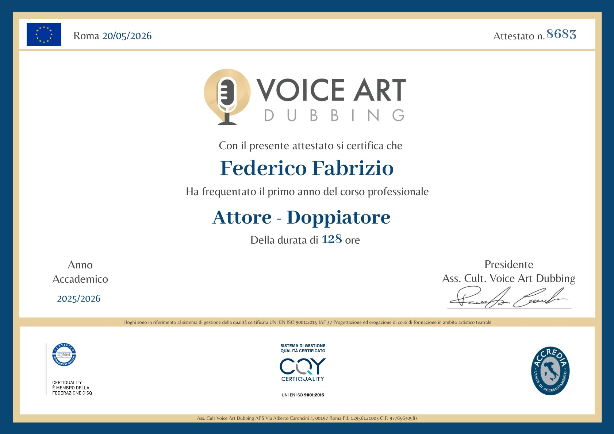
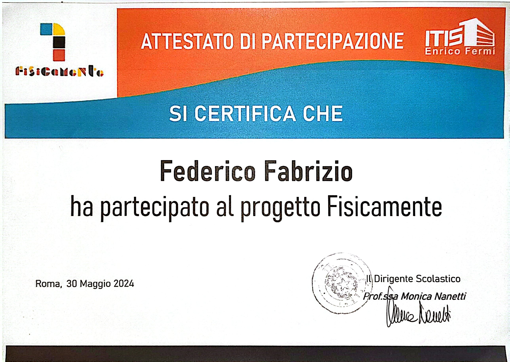
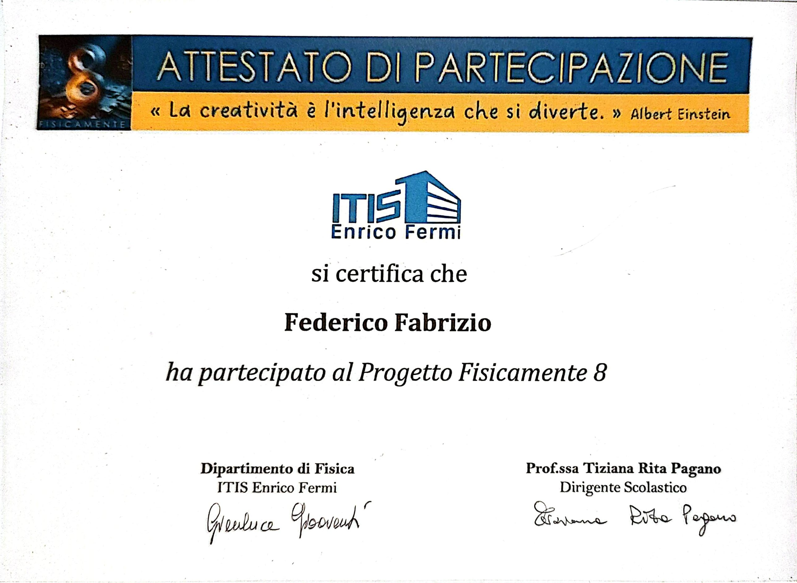

Federico
Fabrizio
Studente di Informatica · ITIS Enrico Fermi, Roma
Quarto anno di informatica, appassionato di tecnologia, reti e doppiaggio. Sto costruendo le basi per il mio futuro con lo studio e con la formazione artistica.
Informazioni
Frequento il quarto anno dell'ITIS Enrico Fermi di Roma, nell'articolazione informatica. Oltre allo studio seguo un corso di formazione artistica nel doppiaggio, che mi aiuta a lavorare su voce, espressione e ascolto. Dal novembre 2026 inizierò anche un corso Cisco Introduction to Networks (ITN) e un corso Oracle di database.
Formazione
Il percorso scolastico e i corsi che sto seguendo. Le barre si aggiornano da sole in base alle date.
Scuola e informatica
Diploma in Informatica
Articolazione informatica. Quarto anno nel 2026-2027, diploma previsto a giugno 2028.
Corso Cisco Introduction to Networks (ITN)
Corso Cisco Networking Academy sulle basi delle reti e dell'infrastruttura informatica, avviato tramite la scuola.
Corso Oracle Database Foundations
Corso introduttivo ai fondamenti dei database relazionali, con qualifica finale.
Formazione artistica
Corso Voice Art Dubbing · Secondo anno
Secondo anno del corso di formazione artistica nel doppiaggio: lavoro su voce, interpretazione e studio in sala.
Vai al sito del corsoCorso Voice Art Dubbing · Primo anno
Primo anno del corso di formazione artistica nel doppiaggio, concluso nel 2025-2026.
Attestati
Clicca su un attestato per vederlo ingrandito.

Corso Voice Art Dubbing · Anno 1
2025 – 2026
Progetto Fisicamente 7
Primo anno ITIS